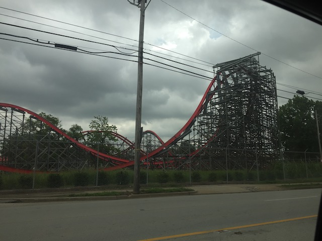
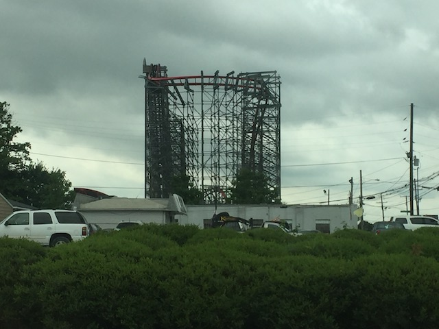
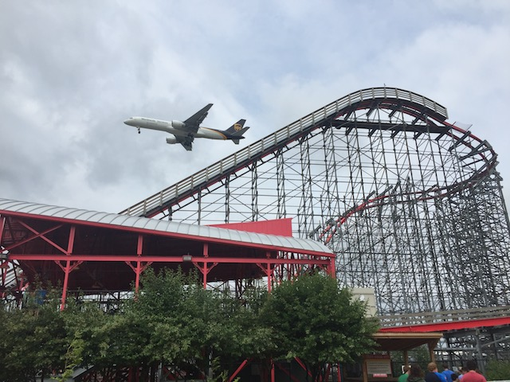

| |
Storm Chaser Review

Today at Incrediblecoasters, we're going to be reviewing Storm Chaser at Kentucky Kingdom. Now this is a Rocky Mountain Makeover, where they take an old busted sh*tty wooden coaster and turn it into a kickass crazy steel coaster. Now the original ride looked...crappy yeah. But also, nothing at all like Storm Chaser. I mean, most RMC makeovers still carry a little bit of the original ride in them, even though its a totally seperate coaster and so much better. But Storm Chaser, while it does use parts of the structure for Twisted Twins, it doesn't seem to resemble the original coaster AT ALL!! Yeah, I never rode Twisted Twins, but it looked nothing like Storm Chaser, and it honestly looked crappy. But considering how Storm Chaser is now here, who cares! Now there's a bit of a debate in the coaster community as to whether Storm Chaser is one of RMC's best coaster or one of their weaker coasters. And while I wouldn't go as far as saying that Storm Chaser is one of their best coasters because they have so many good coasters, Storm Chaser kicks ass and is in no way, one of their weaker coasters. So yeah. Let's get in the cars, pull down the restraints, and away we go! We roll through some straight track and around a turn in a weird sort of turnaround. Why the excessive track? Wouldn't it be better to just turn around normally? I get that it was part of the original Twisted Twins. But it still just seems like excessive track. Oh well. Start climbing up the lifthill, and get a good view of the local street right by Kentucky Kingdom. Riveting. But then we reach the top, dip down, and head around a banked turn, banking further until, HOLY CRAP!! WE'RE UPSIDEDOWN!!! AND WE'RE GAINING A LOT OF SPEED!!! We flip right side up, and we're at the ground now. Yep. This has one of those famous barrel roll drops. And I gotta say. I absolutely love these things. I know I was intrigued by them ever since I first saw them. I now finally did one, and...I love them. They're just so fun. Defiently up there as far as best first drops go. Anyways, we then head over an airtime hill. Yeah. I think this is the first time RMC did a straight airtime hill that was actually of decent size. A real straight big airtime hill. But damn! This thing rides just like the bunny hops they do at the end of their rides. It's got some STRONG ejector air. It just YANKS you out of your seat. And I love it. We then go through a sort of overbanked turn. However, this thing is REALLY overbanked. It's one of those elements that seems to blur the line between inversion and not an inversion. While the nerds all debate amongst themselves, everyone else is rolling their eyes and screaming "GET ON WITH IT!!!". Fine. The element is a lot of fun, gives us some good hangtime. We then head into another sort of airtime hill. Except, it's banked. It's sort of like a wave turn, only...an outwardly banked wave turn. So we not only get airtime, but also some laterals in the wrong direction. And yeah. It's very snappy and very good. Go around a banked turn, over another hill, get some more airtime, and drop back down to the ground in another banked turn. This kicks ass! And then we go into another overbanked turn. This one clearly isn't an inversion. But man is it strong. The airtime and laterals combo is back again, and MAN!!! Yeah. This is f*cking awesome. We go through another airtime hill, get yanked out of our seats, and ZERO G ROLL!!! Just get whipped around that thing as, yeah. It's a very snappy inversion. And out of that, we get a snappy turn, and a couple snappy bunny hops. The airtime is strong and we just fly out of our seats here. Go through a couple more airtime hills, we're still holding strong. Go around a low to the ground turn. Just enjoying the laterals and the grass. We go over a small little banked bunny hop, go under another one of the bunny hops, go over another bunny hop, around a turn, and right into the brake run. DAMN!!! STORM CHASER KICKS ASS!!! I honestly wonder what the hell is up with the people who were complaining that Storm Chaser was weak. NOT REMOTELY TRUE!!! It's just absolutely littered with airtime, laterals, and snappy inversions with a lot of whip. It is RMC at some of their finest. The only downside is that it is on the shorter side of coasters, which is a bummer, as I REALLY like Storm Chaser. I strongly recommend this ride if you're visiting Kentucky Kingdom. It's my favorite ride at the park, and a masterpeice from RMC.
9/10
Location: Kentucky Kingdom
Opened: 2016
Built by: Rocky Mountain Coasters
Last Ridden: June 27, 2018
Storm Chaser Photos







Home
|